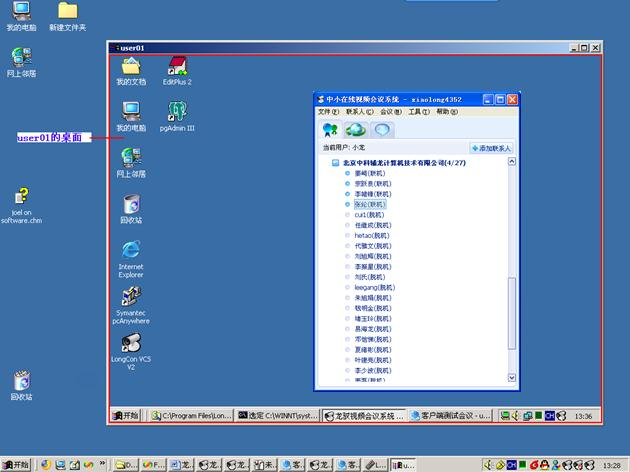

桌面共享的发起可以是申请观看其他参会人的桌面，或邀请其他参会人观看我的桌面。如下图所示：
图1 申请观看桌面
图2 邀请观看桌面
收到申请或邀请的参会人员会在会议室界面弹出提示框，如下图所示：
图3 桌面邀请提示
图4 桌面申请提示
点击“是”，则开始桌面共享。如下图所示：

图5 观看桌面共享
观看桌面共享时，可以申请控制对方计算机。点击“远程共享与控制”菜单，选择“申请控制对方计算机”，发送申请，对方收到申请后提示如下图所示：

图6 桌面控制申请提示
点击“是”，观看方就可以控制被观看的计算机了。此时，控制方和被控制方双方共同控制被控制方的鼠标和键盘。
要想退出控制，控制方可以点击“远程共享与控制”菜单，选择“停止控制”，被控制方可以点击“远程共享与控制”菜单，选择“停止接受控制”。
要想退出桌面共享，观看方可以直接关掉显示对方桌面的窗口或点击“远程共享与控制”菜单，选择“停止观看屏幕”，被观看方可以点击“远程共享与控制”菜单，选择“停止屏幕共享”。
可以同时观看和控制多个桌面，但是被控制方同时只能接受一个人的控制，当有其他人申请并同意时，当前控制的用户自动失去控制权。